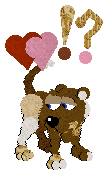
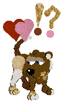
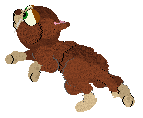
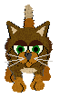
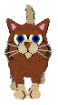
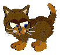
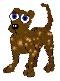
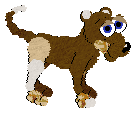
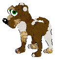

Emoticon Petz for you
~~~~~~~~~~~~~~~~~~~~~~~~~~~~~
Inspired by Ashien's pet-orb pictures, I thought I'd
enlarge upon the theme by making petz with secret "orb-ish" emoticons and
others with permanent emoticons -- wearing their hearts on their sleeves (or
ears, tails etc anyway).
On this page you can see Ashien's
original orbed pictures.
Gohere to
get the Perma-moticon petz.
This page contains the Mystery-moticon petz...
Click here to download The
OddballzDream breedfiles for Catz 3, 3 International, 4 and 5.
Click here to download a package which
helps you to make your own.
To see their own particular emoticons, you need to wait
until they get excited. A good way to excite them is to put them in the
Basket; sometimes you need to take them out of it and put them back in again
one or two times before they get emotional enough. This is not any form of
abuse, by the way; they have fun playing with the basket. They work in Petz
3, 4 or 5. The emoticons, once they appear, will remain on your pet until
you either put it away or you take it to the clothes closet and put, say, a
hat on it.
 

These are just examples of some of the emoticons which will emerge; no two
of the pets on this page are identical. Click on the names below each
picture to download the pet.

Jesmina (female)

Leonardo (male)

Jombo (male)

Kalila (female)

Querida (female)

Jondolo (male)

Jonboo (male)
You can also find petz with permanent orbs which show in the game, at Sue's the Petz Boardwalk